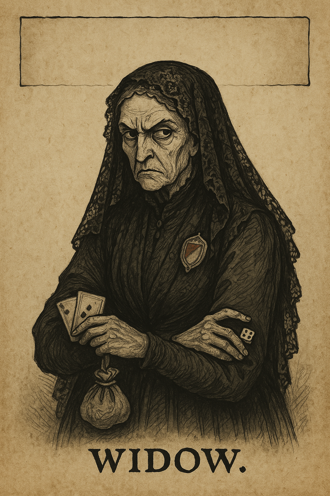

Shadows of the Southwest — NPC Portrait Prompts
Style: Old World grimdark on aged parchment, hand‑inked illustration with Gothic calligraphy caption area, minimal muted spot colors (deep blue, burgundy, tarnished gold), Bretonnian hawk/Morr skull motifs as subtle watermarks.
Robert Le Satanreux II, “Le Deux,” The Burnt Prophet (npc_robert_le_deux.png)
Output: ../images/npc_robert_le_deux.png
Portrait on aged parchment of a half‑melted, pale noble with herbs and charcoal scent motifs, courteous posture, faint mirror reflections behind. Gothic caption space. Include subtle Morr skull/hourglass watermark. Old World grimdark, ink/etching style.
Eléonore “The Whisperer” (npc_eleanore_whisperer.png)
Output: ../images/npc_eleanore_whisperer.png
Veiled occult perfumer, raven‑feather shawl, bone bangles, resin‑stained hands. Mirrored censer smoke forming sigils, eyes intense, a little unhinged. Gothic caption bar. Old World grimdark, hand‑inked.
Artois “The Brave” (npc_artois_brave.png)
Output: ../images/npc_artois_brave.png
Flashy gambler with wine‑stained smile and medals, confidence cracking at midnight. Background hints: bell, card table, hidden coin shrine silhouette. Engraved ink style, parchment wear.
Margot “The Dowager of Dust” (npc_margot_dowager.png)
Output: ../images/npc_margot_dowager.png
Decayed elegance in courtly dress, skeletal servants in perfect etiquette behind. Roses over rot motif, ballroom veil, cold regal gaze. Gothic border, parchment patina.
Skeletal Major‑Domo of Malchance (npc_skeletal_majordomo.png)
Output: ../images/npc_skeletal_majordomo.png
Polished skull in immaculate tailcoat stitched to bone, silver nameplate, posture of strict etiquette, gloved skeletal hands. Ballroom backdrop. Ink/etching on aged parchment.
Perfume Inspector Clairette de Lys (npc_clairette_inspector.png)
Output: ../images/npc_clairette_inspector.png
Brisk perfumers’ guild agent with blue sash, hawk‑sigil stamp, scent cones and blotters at belt; hawk sneezing subtly in vignette. Gatehouse parchment illustration.
Ysabeau “The Perfumed” (npc_ysabeau_perfumed.png)
Output: ../images/npc_ysabeau_perfumed.png
Ancestor spirit appearing as a scented apparition: flowers bloom and wither around, coy and dangerous. Fine lace, poison perfume vial motif. Ink and wash on parchment.
Corporal Hansi Unteruber (npc_hansi_unteruber.png)
Output: ../images/npc_hansi_unteruber.png
Earnest Stirland militia corporal with too‑large coat, crooked badge, ink‑smudged fingers; basement map and door‑table in background; hopeful expression. Hand‑inked on parchment.
Luc le Rôdeur (npc_luc_le_rodeur.png)
Output: ../images/npc_luc_le_rodeur.png
Handsome, harried minstrel with blood‑stained kerchief, lute slung, nosebleed hint, reflective mirror edge nearby. Romantic fatalist mood, ink/etch style.
Dame Colette Vervain (npc_colette_vervain.png)
Output: ../images/npc_colette_vervain.png
Chic perfumer rival in silver‑filigree mask, blue‑violet sash, contract scroll in hand; subtle smug smile. Gothic commercial cartouche, parchment texture.
Maître Rolf Steinhauer (npc_rolf_steinhauer.png)
Output: ../images/npc_rolf_steinhauer.png
Broad‑handed master mason with chalk‑stained doublet, iron pins satchel; castle gate bracing sketch in background. Solid, practical demeanor. Ink architectural vignette.
Étienne Verdoux (npc_etienne_verdoux.png)
Output: ../images/npc_etienne_verdoux.png
Exchequer agent with quill, ledger chain, hawk‑scented wax seal; refined smile, calculating eyes; ledger stamps array. Gothic office parchment style.
Canoness Ysolda (npc_canoness_ysolda.png)
Output: ../images/npc_canoness_ysolda.png
Traditionalist canoness with sky‑blue mantle and hawk brooch, steel gaze, proclamation ribbon in hand; incense curl motif. Ink on parchment, stern heraldic accents.
High Adept of Morr (npc_high_adept_morr.png)
Output: ../images/npc_high_adept_morr.png
Senior priest of Morr in black and white vestments, ash‑scented gloves, calm grave expression; skull/hourglass watermark. Parchment reliquary motif.
Witch Hunter Captain Hildegard Falk (npc_hildegard_falk.png)
Output: ../images/npc_hildegard_falk.png
Severe witch hunter in black coat with silver hammer pin, ink‑stained fingers; calm, relentless gaze; dossier scrolls. Ink/etch style on stained parchment.
Mariette Voss (npc_mariette_voss.png)
Output: ../images/npc_mariette_voss.png
Apothecary procurer with powdered hair, mourning veil, ledger cuffs; lilies over grave‑cold aesthetic; perfume crate stamp ‘Lot Ysabeau’. Hand‑inked on parchment.
Captain Rémy Valoise (npc_remy_valoise.png)
Output: ../images/npc_remy_valoise.png
Bretonnian customs officer in immaculate tabard with hawk plume, incense‑red eyes; ledger and stamp; stern but fair air. Parchment official vignette.
Abbé Celestin d’Anjou (npc_abbe_celestin.png)
Output: ../images/npc_abbe_celestin.png
Chaplain of the Lady in white and sky‑blue vestments with gloves, smiling severity; purity mirror symbol; incense curl. Gothic devotional style.
Kaspar “Rotgut” Kessel (npc_kaspar_rotgut.png)
Output: ../images/npc_kaspar_rotgut.png
Bandit leader with shattered‑glass scar pattern on cheeks, cloth over eyes in melee stance, smoke pot nearby; bell talisman. Ink linework on parchment.
Mogdrak Skullgleam (npc_mogdrak_skullgleam.png)
Output: ../images/npc_mogdrak_skullgleam.png
Orc pilgrim herald with blackened face paint, polished shield as ‘seer glass,’ bacon‑grease incense smoke; boisterous reverence posture. Rough ink style.
The Master Falconer of Parravon (npc_master_falconer.png)
Output: ../images/npc_master_falconer.png
Windburned falconer with hooded hawk on wrist, mirrored buckler; cliff eyrie hint; steady, dry humor in gaze. Old World engraving on parchment.
Guild Taster (npc_guild_taster.png)
Output: ../images/npc_guild_taster.png
Over‑scented critic with red‑veined nose, silk scarf stained by tastings; goblet with skull watermark; anxious eyes. Wine guild parchment aesthetic.
Morr Priest Contact (npc_morr_priest_contact.png)
Output: ../images/npc_morr_priest_contact.png
Quiet ally priest of Morr with black robes, white skull rosary, tired but kind eyes; simple reliquary icon. Ink/etching, parchment wear.
Ferryman of the Stir (npc_ferryman_stir.png)
Output: ../images/npc_ferryman_stir.png
Hollow‑cheeked boatman with oar‑scarred hands, river‑mud boots; quiet, wary gaze; foggy riverbank. Ink on parchment.
Raven‑Choir Attendant (npc_raven_choir_attendant.png)
Output: ../images/npc_raven_choir_attendant.png
Masked attendant with saint‑glass‑lined half‑mask, inked verses on forearms, incense thurible; breathless devotion. Ink studies on parchment.
Witch Hunter Widow (npc_witch_hunter_widow.png)
Output: ../images/npc_witch_hunter_widow.png

Widow in black lace with old badge under shawl, sharp watchful eyes; coin purse, dice or cards hint; bitter wit in pose. Ink/etch on parchment.
Dock Boss (npc_dock_boss.png)
Output: ../images/npc_dock_boss.png
Thick coat, ledger chain, bell with cracked clapper; wary, practical gaze; damp Nuln alley vignette. Parchment linework.
Master of Midnight — Pit Boss (npc_master_of_midnight.png)
Output: ../images/npc_master_of_midnight.png
Tall, spare pit boss with cracked metronome, gloved hands, precise posture; shadowed rafters and bell rope hint. Engraved ink on parchment.
Johan Pech (npc_johan_pech.png)
Output: ../images/npc_johan_pech.png
Pallid accountant clutching abacus beads like a rosary; terrified glance at clock striking XII; ledger glow. Ink wash on parchment.
Signet “Velveteen” Sarto (npc_velveteen_sarto.png)
Output: ../images/npc_velveteen_sarto.png
Showy duelist in velvet half‑cape, flourish pose, crowd behind; mirror shard on floor reflecting delayed move. Old World dueling card look.
Parravon Chaplain of the Lady (npc_parravon_chaplain.png)
Output: ../images/npc_parravon_chaplain.png
Traditionalist chaplain with smile like a blade, ceremonial mirror emblem, immaculate vestments; severe poise. Ink on parchment.
Orc Pilgrim Chieftain (npc_orc_pilgrim_chief.png)
Output: ../images/npc_orc_pilgrim_chief.png
Imposing orc leader with rough totems, shield polished as omen mirror, banners echoing the Burnt Prophet; fervent posture. Rough ink strokes.